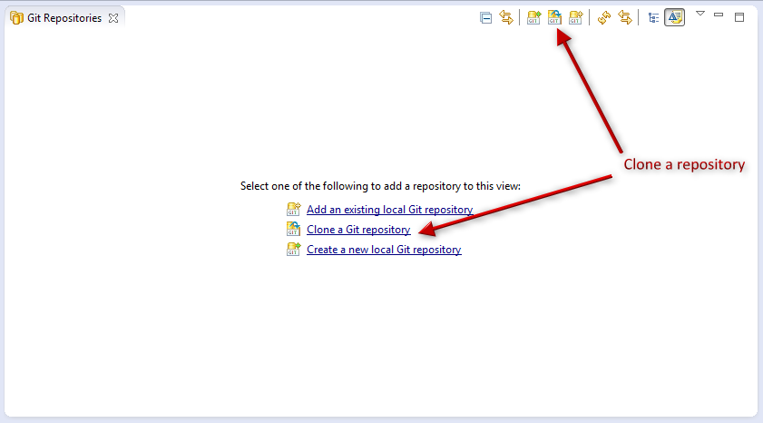
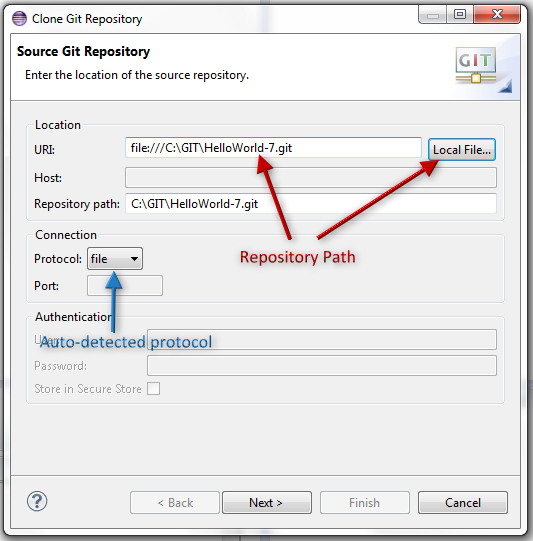
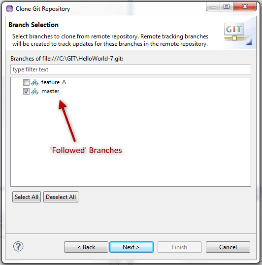
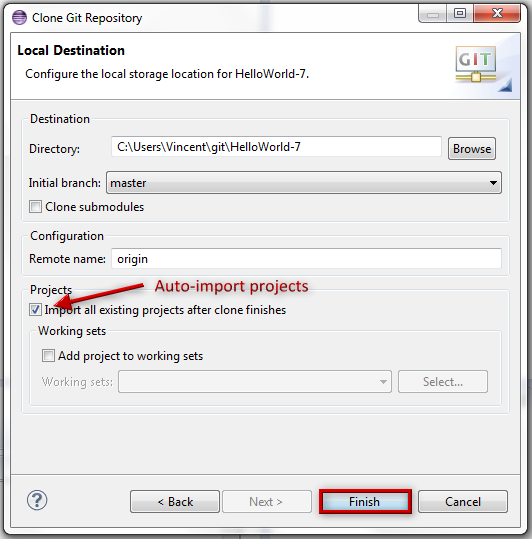
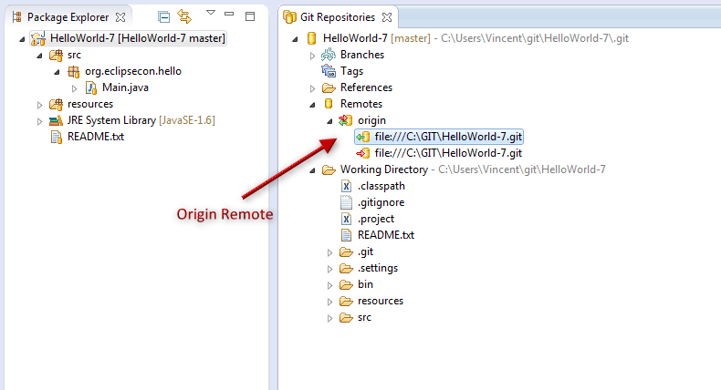

Clone a remote repository
- Go to the Git perspective
- Click on
Clone a Git Repository
 -
Click on the
Local Filebutton and select the HelloWorld-7 location where you extracted the workspace.zip
Note
If the URI, is correctly formatted, EGit will automatically detect the other parameters. - Click on
Next -
On the next page, select all the branches
Note
For the moment, you will be able to work locally only on the branches you selected. - Click on
Next -
On the last page, select
Import all existing projects after clone finishesand click onFinish
 -
You can now see the
HelloWorld-7project in the Explorer and the repository Git Repositories.
In the Remotes folder, you can see theOriginremote.
